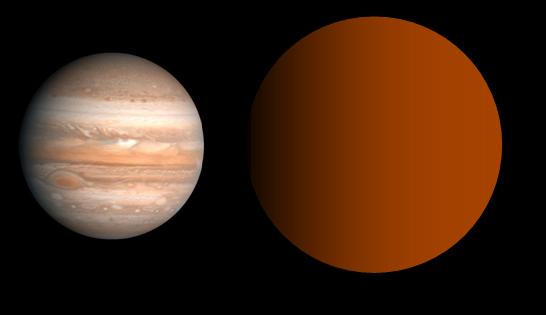

KELT-9b

คือดาวเคราะห์นอกระบบสุริยะ (Exoplanet) ชนิดดาวพฤหัสบดีร้อนจัด (Ultra-hot Jupiter) ที่ได้รับการบันทึกว่ามีความร้อนสูงที่สุดเท่าที่เคยมีการค้นพบในขณะนั้น โดยมีอุณหภูมิพื้นวัฏจักรฝั่งกลางวันร้อนกว่า 4,300–4,600 องศาเซลเซียส (ประมาณ 4,579 เคลวิน) ซึ่งร้อนยิ่งกว่าดาวฤกษ์บางดวงเสียอีก
